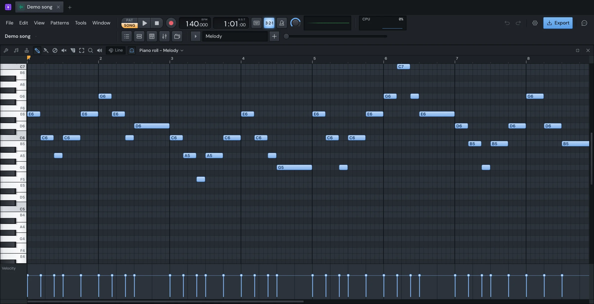

Make
Piano roll
The Piano roll is where you write a channel's notes. Pitch runs up the keyboard on the left, time runs along the ruler on top, and each note is a bar on the grid. The notes belong to one channel in the pattern shown, the same notes the Channel rack's steps show. It works the way FL Studio's does: left-click adds, right-click deletes.

Open it
- Press F7 or ⌥3, click its button on the toolbar, or choose Window › Piano Roll. It opens on the channel selected in the rack.
- In the Channel rack, click a row's note preview, double-click a channel's select button, or right-click a channel and choose Piano roll.
- In the Playlist, double-click a pattern clip. The Piano roll opens on the channel with the most notes in it.
The Piano roll fills the window when it opens. Double-click its title bar to make it a window of its own size. Its keys only work while it's the window in front. Escape closes it.
If the rack has no channels, the Piano roll asks you to add one first.
What's on screen
- The title bar: the target channel, the Tools menu, the Scale menu, the Stamp menu, the tools, the Snap menu and the ghost notes switch.
- The keyboard on the left. Click or drag on it to play keys.
- The ruler on top. It sets where play starts and holds the time selection.
- The grid, where the notes are.
- The event editor underneath, with each note's velocity or pan.
While the song plays, a line moves across the grid with the playhead.
Draw notes
- Pick Draw (P).
- Click an empty spot on the grid. A note starts at the beginning of the grid cell you clicked.
- Keep the button down and drag to move it before you let go. ⇧-drag pulls out its length instead.
A new note is as long as the last note you clicked or resized, so click a note of the length you want before drawing more. Until you do, new notes are a beat long.
When notes are selected, clicking an empty spot only deselects them. Click again to draw.
Paint (B) draws a run of notes as you drag, each the current length, at the pitch you pressed. Hold ⇧ to have each note follow the pointer's pitch instead.
While the song plays, a note you draw is heard as soon as you press. When it's stopped, the note you move is heard as you drag it.
Move, copy and resize notes
With Draw or Paint:
- Drag a note to move it. If it's selected, the whole selection moves with it.
- ⇧-drag a note to move a copy of it (or of the selection). The copies end up selected.
- Once you're moving, hold ⇧ to keep the pitch, or ⌘ to keep the time.
- Drag a note's right edge to change its length. The end snaps to the nearest grid line.
- Double-click a note to open Note properties.
Notes move by whole grid cells, so a note that sits off the grid keeps its offset. Notes move together: if one of them would go past the top or bottom of the keyboard, none of them moves.
When more than one note is selected, a stretch handle appears at the selection's end. Drag it to stretch or squeeze the notes in time from their start. It snaps; hold ⌥ for none.
Delete and mute notes
- Right-click a note to delete it. Right-drag across the grid to delete every note you sweep over.
- The Delete tool (D) deletes notes with the left button too, by clicking or sweeping.
- Delete or Backspace deletes the selected notes.
- The Mute tool (T) mutes notes as you click or sweep. The first note you press decides: if it was playing, the notes you sweep are muted; if it was muted, they're unmuted. Muted notes stay in place and don't play.
- ⌥M mutes the selected notes, and ⇧⌥M unmutes them.
The tools
The tool buttons are on the title bar.
| Tool | Key | What it does |
|---|---|---|
| Draw | P | Click to add a note, drag to move or resize one. |
| Paint | B | Drag to lay down a run of notes. |
| Delete | D | Click or sweep to delete notes. |
| Mute | T | Click or sweep to mute or unmute notes. |
| Slice | C | Cut notes in two along a line in time. |
| Select | E | Drag a rectangle to select notes. |
| Zoom | Z | Drag a rectangle to zoom to it. |
| Playback | Y | Drag across notes to hear them. |
Right-click deletes with every tool except Zoom.
Slice
- Pick Slice (C).
- Press where you want the cut, then drag up or down across the rows to cut.
- Let go. Every note the line crosses is cut in two, and the pieces after the cut are selected.
The cut goes on the grid line nearest the pointer. Hold ⌥ to cut anywhere. Hold ⇧ to cut every row at once: the line shows before you press.
The Slice tool cuts every note it crosses, selected or not.
Zoom and Playback
With Zoom, drag a rectangle to fill the view with it. Click to zoom out. Right-click to go back to the view you had before the last zoom, and right-click again to come back.
With Playback, drag along the grid. Each note under the pointer sounds as you pass it. You can do the same with any tool by holding ⌥ and dragging with the right button.
Select notes
- Drag a rectangle with the Select tool, or with ⌘ held in any tool. Hold ⇧ as well to add to the selection.
- ⌘-click a note to select it alone. ⇧⌘-click adds it to the selection or takes it out. With the Select tool, ⇧-click does the same.
- ⌘-drag on the keyboard selects every note on the keys you drag over.
- ⌘A selects every note, ⌘D deselects, and ⇧I inverts the selection.
- Right-click an empty spot, or ⌘-click one, to deselect.
- Selecting a range of time on the ruler selects the notes that start in it (see The time selection).
Selected notes are drawn highlighted. The selection clears when you switch pattern or channel.
Commands act on the selection, or on every note
Most commands, such as quantize, chop, glue, legato and the moves with the arrow keys, change the selected notes. When nothing is selected, they change every note of the channel in the pattern. Delete, copy and cut need a selection.
Copy, paste and duplicate
- ⌘C copies the selected notes and ⌘X cuts them.
- ⌘V pastes them at the first bar in view. The pasted notes are selected, ready to drag into place.
- ⌘B duplicates the selection to the right. The copy goes straight after the selection, rounded up to the snap. If there's a time selection, the copy goes one time selection later, and the time selection moves along with it. Press ⌘B again to keep repeating.
The Edit menu's Cut, Copy, Paste, Delete and Select All work on the Piano roll's notes while it's in front.
Move notes with the keys
| Keys | Moves the notes |
|---|---|
| ⇧← ⇧→ | Back or forward by a snap unit |
| ⌥← ⌥→ | Back or forward by a tick |
| ⇧↑ ⇧↓ or ⌥↑ ⌥↓ | Up or down a semitone |
| ⌘↑ ⌘↓ | Up or down an octave |
| ⇧⌘← ⇧⌘→ | Rotate by a snap unit: notes pushed past the pattern's end come round to its start |
A tick is the smallest step in time: a beat has 96, and a step (a sixteenth) has 24.
Snap
The Snap menu (the magnet) sets the grid notes snap to when you draw, move, resize and slice them, and what quantize and chop use.
- Line and Cell snap to the grid drawn at the current zoom. Zoom in and the grid gets finer, down to a step. Line is the default.
- (none) turns snapping off.
- The rest are fixed lengths: 1/6, 1/4, 1/3 and 1/2 of a step, a step, 1/6, 1/4, 1/3 and 1/2 of a beat, a beat and a bar.
Hold ⌥ while you drag to ignore the snap for that drag. The snap also decides whether recorded notes are quantized.
The time selection
The time selection is a red range on the ruler. While you're in pattern mode, playback loops it.
- Select a range: double-click the ruler and drag, or ⌘-drag on it. The notes that start in the range are selected too.
- Clear it: double-click the ruler without dragging, or right-click it. That also deselects the notes it selected.
- ⌘Enter makes the time selection the span of the selected notes (or of every note).
- ⌘← and ⌘→ move the time selection back or forward by its own length and select the notes in its new place. Use them to step through a pattern a section at a time.
- ⌘D clears it along with the selection.
The range snaps to the grid; hold ⌥ for none. Closing the Piano roll stops looping it.
In song mode, the loop is the Playlist's time selection instead.
The ruler
- Click or drag on the ruler to set where play starts. If the song is playing, it jumps there.
- Double-click and drag, or ⌘-drag, to make a time selection.
- Double-click or right-click to clear the time selection.
Zoom and scroll
| Do this | To |
|---|---|
| Scroll | Move up and down the keyboard |
| ⇧-scroll, or scroll sideways | Move along time |
| ⌘-scroll, or pinch | Zoom in time around the pointer |
| ⌘- or ⌥-scroll over the keyboard | Make the rows taller or shorter |
| Middle-drag | Pan |
| ⌘-middle-drag, or middle-drag on the keyboard | Make the rows taller or shorter |
| ⌘-right-click | Zoom to the selection (or every note); again to go back |
| PageUp / PageDown | Zoom in or out |
| ⇧1 ⇧2 ⇧3 | Show 1, 4 or 16 bars |
| ⇧4 | Show every note |
| ⇧5 | Show the time selection |
| ⇧0 | Centre on the playhead (or where play starts) |
Double-click the vertical scrollbar to bring the rows back to their usual height.
Quantize
Quantizing pulls notes onto the grid. The grid is the snap, or a step when the snap is off.
- ⌃Q Quick quantize: each note's start and end go to the nearest grid line. A note so short it would vanish keeps one grid cell.
- ⇧Q Quantize start times: the starts go to the grid, and each note keeps its length.
- ⌥Q Quantize…: opens the Quantizer.
The Quantizer
The Quantizer quantizes part of the way, and shows and plays the result while it's open.
- Select the notes, or select none to quantize them all.
- Press ⌥Q, or choose Tools › Quantize….
- Set the grid and the knobs. The Piano roll shows the result as you turn them, and plays it if the song is playing.
- Click Accept. To leave the notes as they were, close the window or press Escape.
| Control | What it does |
|---|---|
| Grid | The grid to quantize to: the Piano roll's snap, or a length of its own. |
| START | How far each note's start moves towards the grid. |
| SENS | Only notes this close to a grid line move. All the way up, every note moves. |
| DUR | How far ends or lengths move towards the grid, when they're quantized. |
| SWING | Pushes every second grid line later. |
| Note ends | Leave duration, Leave end time, Quantize end time or Quantize duration. |
A line under the controls says how many notes will move. Reset puts the controls back as they start. Accept is one undo step. The Quantizer keeps its settings for the next time you open it.
Chop
Chopping cuts notes into shorter ones.
- ⌘U Quick chop: cuts each note into pieces the length of the snap.
- ⌥U Chop…: opens the Chopper.
The Chopper
The Chopper cuts notes in a rhythm, with accents and panning, and plays the result while it's open.
- Select the notes, or select none to chop them all.
- Press ⌥U, or choose Tools › Chop….
- Pick a pattern and set the knobs. The Piano roll shows and plays the result as you go.
- Click Accept. The pieces are selected. Close the window or press Escape to leave the notes as they were.
| Control | What it does |
|---|---|
| Pattern | The rhythm: Default cuts pieces the snap long, as Quick chop does. The others include Triplets, Dotted, Gallop, 3-3-2, Trap roll, Stutter, Ramp, Gate and Ping-pong. Each shows a hint in the menu. |
| Time mul | Makes the pattern slower or faster, from ×1/4 to ×4. |
| PAN | How much of the pattern's panning the pieces get. |
| VEL | How much of the pattern's accents the pieces get. |
| Absolute pattern | On, the rhythm counts from the pattern's start. Off, it counts from each note's start. |
The rhythm is measured on the snap. If the Chopper says the pattern is too fast, turn Time mul left or pick a coarser snap. The Chopper keeps its settings for the next time you open it.
Glue, legato and lengths
- ⌘G Glue: notes of the same pitch that touch or overlap become one note. It keeps the first note's velocity and pan.
- ⌘L Quick legato: each note is held until the next one starts. Notes that start together (a chord) end together.
- ⇧D Discard lengths: every note becomes the snap's length (or a tick long with the snap off). Handy for drums and one-shots.
The Tools menu
The wrench on the title bar. Each item works on the selection, or on every note when nothing is selected.
| Item | Key |
|---|---|
| Chop… | ⌥U |
| Quick chop | ⌘U |
| Glue | ⌘G |
| Quick quantize | ⌃Q |
| Quantize start times | ⇧Q |
| Quantize… | ⌥Q |
| Quick legato | ⌘L |
The event editor
The event editor under the grid shows a bar for each note: its velocity, or its pan.
- Click the lane's label, or press F, to switch between Velocity and Pan.
- Drag across the lane to draw values. Each note you pass takes the height of the pointer. If notes are selected, only they change.
- ⇧-drag gives every note you sweep the same value: the height where you pressed.
- ⌥-drag resets the notes you sweep: velocity to the default, pan to the centre.
- Drag a bar's top up or down to set that note alone. It selects the note.
- Press near a note's start and drag up or down to set it. Notes that start at the same moment (a chord) change together.
- Drag the lane's top edge to make it taller or shorter, and double-click that edge for its usual height.
- ⇧Enter shows or hides the lane.
You can also change velocity on the grid: hold ⌥ and scroll over a note. It changes by 2% a notch, or 0.5% with ⌘ as well. If the note is selected, the whole selection changes. A run of turns is one undo step.
Note properties
Double-click a note to open its properties.
- VEL and PAN knobs set its velocity and pan.
- Start time (bar:step:tick, counted from 1) and Duration (bar:step:tick) set where it is and how long.
Click Accept or press Enter to keep the change. Escape or Cancel leaves it.
If the note you double-click is part of a selection, the window says how many more notes there are, and only VEL and PAN show: they apply to all of them.
Ghost notes
Ghost notes are the other channels' notes in the same pattern, drawn faintly behind this channel's. They help you write a bass line against the kick, or a melody against the chords.
- Click the ghost notes switch on the title bar, or press ⌥V, to show or hide them. They're on by default.
- Double right-click a ghost note to switch to its channel.
The target channel
The window's title names the channel whose notes you're editing. Click it to pick another: the channels with notes in this pattern come first, then the others.
| Key | Switches to |
|---|---|
| G / K | The channel above or below in the rack |
| H / J | The previous or next channel that has notes in this pattern |
You can drop a sample from the Browser onto the Piano roll. If the target channel is a sampler, the sample replaces its own. Otherwise a new channel is made for it and shown.
The song's scale
The Scale menu (the note icon) lights the notes of a scale on the grid. While a scale is set, notes you draw and move land on its notes: each goes to the nearest note of the scale, the lower one when two are as near. Moving notes only in time doesn't change their pitch.
- Click the Scale menu.
- Pick a scale, then its root (C to B).
Choose None to turn it off. Hold ⌥ while drawing or moving to put a note anywhere.
The scale belongs to the song, not to the channel: it's saved with the song and shows on every channel. Changing it is a step you can undo.
The Stamp
The Stamp places a whole chord with one click.
- Click the Stamp menu and pick a chord. The Piano roll switches to Draw.
- Click the grid. The note you click is the chord's lowest note.
- Keep the button down and drag to move the chord before you let go.
The menu has fixed chords (major, minor, sevenths, ninths, suspended chords and more) and two that follow the song's scale: Triad of the scale and Seventh of the scale. These build the chord from the scale's own notes, so they fit the key wherever you click. With no scale set, they use a major scale on the note you click.
Pick None (a note) to go back to drawing single notes.
Every key
These work while the Piano roll is the window in front.
| Key | Does |
|---|---|
| P B D T C E Z Y | Draw, Paint, Delete, Mute, Slice, Select, Zoom, Playback |
| ⌘A | Select every note |
| ⌘D | Deselect, and clear the time selection |
| ⇧I | Invert the selection |
| ⌘C ⌘X ⌘V | Copy, cut, paste |
| ⌘B | Duplicate to the right |
| Delete | Delete the selected notes |
| ⌃Q | Quick quantize |
| ⇧Q | Quantize start times |
| ⌥Q | The Quantizer |
| ⌘U | Quick chop |
| ⌥U | The Chopper |
| ⌘G | Glue |
| ⌘L | Quick legato |
| ⇧D | Discard lengths |
| ⌥M / ⇧⌥M | Mute / unmute |
| ⇧← ⇧→ | Move by a snap unit |
| ⌥← ⌥→ | Move by a tick |
| ⇧↑ ⇧↓ | Move a semitone |
| ⌘↑ ⌘↓ | Move an octave |
| ⇧⌘← ⇧⌘→ | Rotate within the pattern |
| ⌘← ⌘→ | Move the time selection by its length |
| ⌘Enter | Time selection around the notes |
| F | Velocity or pan in the event editor |
| ⇧Enter | Show or hide the event editor |
| ⌥V | Ghost notes on or off |
| G K | Channel above, below |
| H J | Previous, next channel with notes here |
| PageUp PageDown | Zoom in, out |
| ⇧1 to ⇧5, ⇧0 | Zoom presets, centre on the playhead |
| Escape | Close the Piano roll |
The app's own keys still work with the Piano roll in front: Space to play, ⌘Z and ⇧⌘Z to undo and redo, L for pattern or song mode, R to record, ⌘T for the typing keyboard, ⌘S to save, and F5 to F9 for the other windows. While the typing keyboard is on, the letter keys play notes instead of choosing tools. See Shortcuts for the rest.
Something here wrong or missing? Tell us.